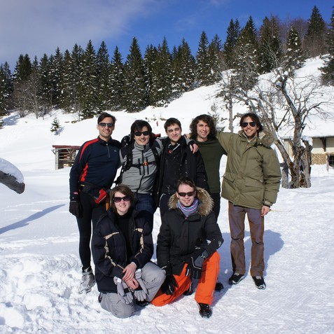

Cozy 1.0 "Snowden" Release
We dreamt of an internet where we would not have to compromise our privacy everytime we wish to benefit from a service. An internet where we are not obliged to manage 25 accounts and passwords. Where we could search in our entire data with a single request. We dreamt of a web where it would be easy to create our applications and where they can collaborate. In short, we dreamt of web services at OUR service.
Today we have the great honor to pose the first brick of our ideal! We published the first version of Cozy, a personal cloud that unites your web applications and your data on your hardware. With a single click you can deploy your services on your personal computer in the comfort of your living-room, on a dedicated server or even on a mini board such as the Raspberry Pi.
This first version named "Snowden" as homage to the person the NSA hates the most. He provided us with proofs of what we have suspected: the cloud is not a paradise. It has helped us tremendously in explaining the benefits of cozy, we are grateful for his work.
The platform is now ready to welcome new and improved applications. Here are the newest modifications made to the Core of Cozy:
- The main User Interface has been fully redesigned and is now customisable
- We lowered the memory footprint of the stack. Cozy can run several applications with less than 512MB of RAM.
- We provide three ready to go images for Virtualbox, Raspberry Pi and OpenVZ.
To conclude here are the goals of the project:
Short term
Cozy will provide first-class agenda and contact applications,
Mailpile will be integrated. 25 apps will be available and the Github repo will
reach 500 stars.
Mid term
Cozy becomes the perfect backend for Firefox OS and the
application deployer will be based on Docker.
Long term
Cozy is the gravity center of your digital life. Through it, all
your devices and sensors collaborate together for you and your contacts.
Cozy 1.0 "Snowden" has arrived, take advantage of your personal cloud and browse the web with your data in the palm of your hands.
Star the Github repo
Host Cozy
Build your own application
Engage with the Community
A software proudly made in France by Benjamin, Frank, Joseph, Lucas, Maxence Romain and Zoé from Cozy Cloud.
